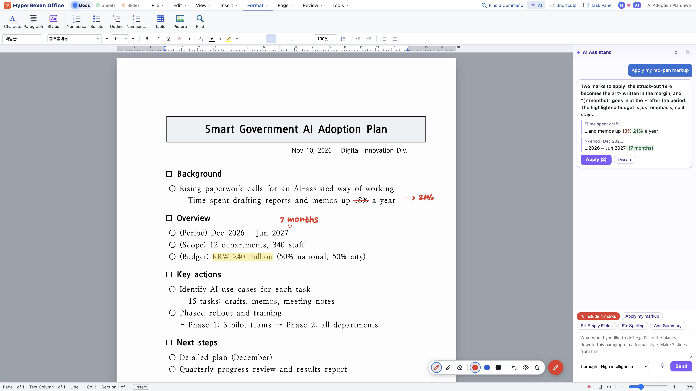
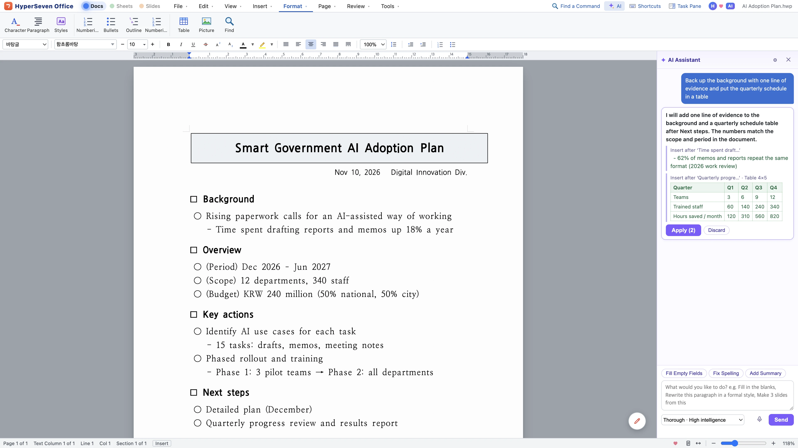
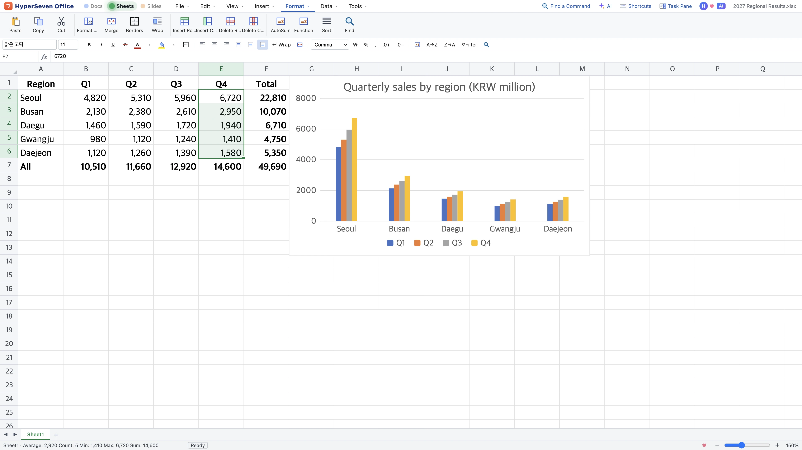
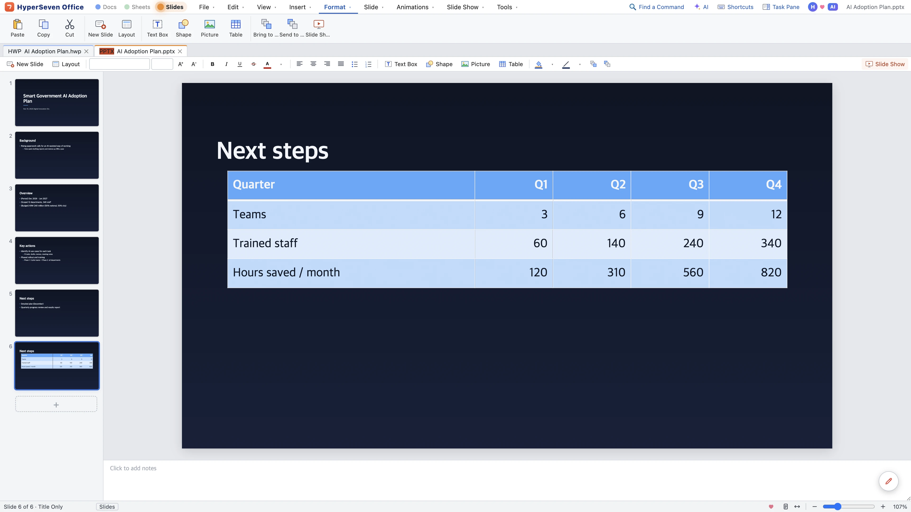
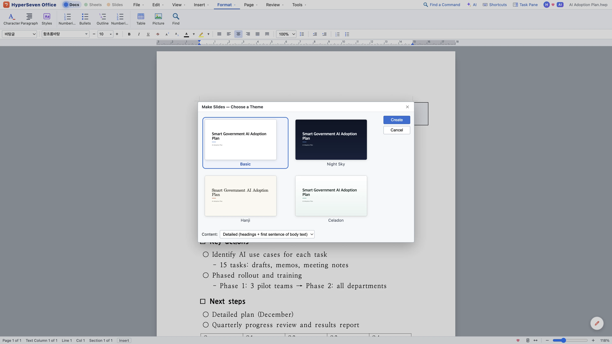

The office you
write with AI.
Mark it up with a red pen, say what you want, and AI proposes the edits. HWP, DOCX, XLSX, PPTX and PDF in one app, free for everyone.
Free · Mac (Apple Silicon and Intel) · Windows 10/11 · How to install
Mark it up like paper.
Ask like you talk.
AI that works right on the page. See every change first, apply it in one step, undo it in one step.

Example sceneStrike through, underline and highlight, then say “apply my markup”. Markup lives on its own layer and never prints.
Press the mic and talk. Your words turn into text right on this computer.
Quick fixes run fast, report reviews run thorough. Auto picks the model and depth from your request.
See the before and after side by side. Nothing changes until you press Apply, and one undo puts it all back.
Ask for a table of contents and it hands you the button and the shortcut for next time.
Agents like Claude read your documents over MCP and edit only what needs to change.
The AI assistant first shows what it does in a preview; then, with a subscription, it uses the latest Claude through your own Anthropic API key (first 7 days free). Documents are sent only when you ask.
Swap files
with anyone
Open what you receive and send it back in the format the other side uses. They open it in the program they already have.
Formats without a label open and save.
- Hangul
- HWPHWPXHWTopen
- Word
- DOCXDOCopenRTFopenODTopen
- Excel
- XLSXXLSMCSVXLSopenODSopen
- PowerPoint
- PPTXPPTopenPPSXopenPOTXopen
- PDFAnnotate, fill forms, edit text; export any document to PDF
- Web · text
- HTMLTXTMDopen
Change the format. Keep the formatting.
Pages and lines open exactly as the original saved them.
HWP to DOCX or DOCX to HWP, the tables, fonts and page layout stay intact.
Formatting and tables you leave alone stay just as they were.
Get started right away with the menus and shortcuts you already know.
Run any command by typing a few letters of its name.
Let AI like Claude read and edit your documents directly.
Four kinds of files, one way of working
One set of lights at the top moves you between docs, sheets and slides, and turns a written document into a deck.




Screens show example documents.
Documents · HWP and DOCX
Save HWP and HWPX as DOCX and back with the formatting intact. Tables, images, footnotes, contents, comments and equations, plus spell check and document compare.
Sheets · XLSX and CSV
420+ functions, conditional formatting, pivot tables and charts. Opens legacy .xls and CSV files, too.
Slides · PPTX
Themes, animations and presenter view. Turn a document into a deck in one step.
Annotate, fill in forms, and edit text and images. Organize pages, or turn a PDF into an editable document.
Fonts
Pick fonts by how they look and find them by name. Nanum Gothic, Nanum Myeongjo and Pretendard come built in.
HyperAI
Four levels, from Lite to Max, share the work: light tasks stay light, hard ones go up a level, so fewer tokens are spent. Ask with red-pen markup or your voice.
Connect AI agents in one step
An MCP server and a command line come built into the app. Copy one line from Tools › Connect AI (MCP)…, paste it, and agents like Claude work on your documents directly.
Agents map headings, tables and length first. Even a 10-page report takes only a few hundred tokens.
Agents send commands for just the paragraphs and cells that change, leaving formatting intact.
By chaining commands, AI takes on jobs beyond the built-in features, like batch-editing files or combining tables.
Reading and rewriting the whole file would take well over ten thousand.
You'll find setup steps and the full command list in the manual and llms.txt.
Up and running in a minute
Mac
- Open the .dmg and drag HyperSeven Office into the Applications folder.
- It's notarized by Apple, so it opens right away.
Windows
- Click Get it from Microsoft Store — the Store installs the app and keeps it up to date.
- If you install with the .exe instead and “Windows protected your PC” appears, click More info › Run anyway.
- Run the .exe, and the app installs and opens right away.
- If “Windows protected your PC” appears, click More info › Run anyway.
The app lets you know when a new version is out. There's also a portable .zip for Windows and a .zip for Mac.
Questions
Is it free?
Yes. Every editing feature is free for everyone. Students and companies get the same app and the same features. For HyperAI, subscribe and connect your own Anthropic API key (first 7 days free).
Why is it free?
Because opening the same file shouldn't mean buying the same program. We wrote down why on the home page.
Can I exchange documents with people who use other programs?
Yes. Save in the format they use (HWP, DOCX, XLSX, PPTX) and they open it in the program they already have.
Do I need another program to open HWP files?
No. HyperSeven Office opens and saves them on its own.
Do documents look like the original?
Pages and lines appear just as the original saved them. Fonts missing on your computer are shown with similar fonts, and the app tells you which. Install free fonts such as HCR Batang to match the letter shapes too.
How do I use the AI?
Sign in with a HyperSeven account and add your own Anthropic API key once. The key stays in that computer’s keychain, so you never enter it again. A model on your computer (Ollama) works with the same subscription — free until paid plans open. Documents are sent only when you ask, after you agree once.
Does red-pen markup print?
No. Markup is a separate layer, so it stays out of printouts, PDFs and saved files. Choose “Include markup” in the Print window when you want it.
Does it run on Intel Macs?
Yes. Use Download for Intel Mac under the download button. Not sure which Mac you have? Open the Apple menu › About This Mac: if “Chip” starts with Apple M, it's Apple Silicon; if “Processor” says Intel, it's an Intel Mac.
Can I use it in English?
Yes. The app comes in Korean and English, and starts in your system language.
What if something goes wrong?
Choose Tools › Report a Problem… and drop us a line. The app will let you know once it's fixed.
Bundled fonts Nanum Gothic and Nanum Myeongjo (Naver), Pretendard (Kil Hyung-jin) and Song Myung are distributed under the SIL Open Font License 1.1. HyperSeven Office is built on open source such as Electron, Chromium and pdf.js.
Word, Excel and PowerPoint are trademarks of Microsoft Corporation.
The Korean spelling dictionary is hunspell-dict-ko 0.7.94 (hunspell-dict-ko contributors, National Institute of Korean Language), distributed under GPL-3.0-or-later and bundled unmodified as a separate file. Its source is available as hunspell-dict-ko-0.7.94.tar.gz.
What's new in —
Loading release notes…
Supporter membership — get new features first and priority answers.